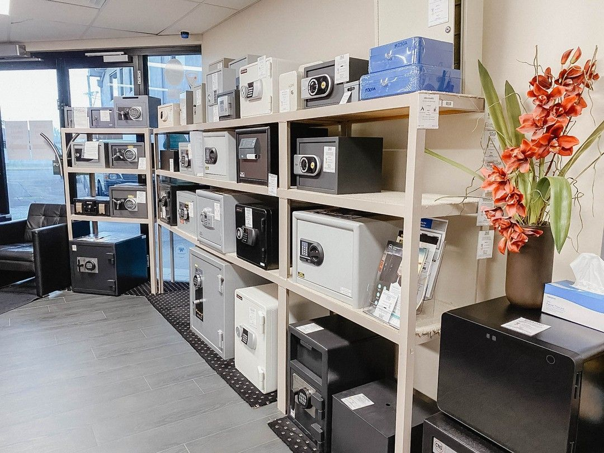

On this page
AT A GLANCE
A safe is an essential investment for protecting your most valuable items, important documents and personal possessions.
Get A Free Quote Now!

High Quality Safes Hope Island
A safe is an essential investment for protecting your most valuable items, important documents and personal possessions. Safes provide dependable security against theft, fire and water damage, ensuring peace of mind in both homes and businesses.
At SPL Security Solutions, our selection of safes caters to a variety of needs, from compact residential safes to large, high-capacity options for commercial use. Equipped with advanced locking mechanisms including key, combination and digital locks, our safes are built to meet diverse security requirements. Each purchase includes delivery, a minimum one-year warranty and support to help you maximise the safe’s performance.
Call (07) 5588 8111 today to discuss your security needs in Hope Island.
Homeowners in Hope Island can benefit from professional locksmith services tailored to enhance home security. From emergency lockout assistance to key duplication and lock upgrades, we ensure your property is protected day and night.
Businesses in Hope Island can take advantage of comprehensive security solutions designed to protect commercial properties. These services include high-security lock installations, access control and 24/7 emergency assistance for unexpected issues.
Automotive locksmith services provide reliable solutions for car key replacements, lock repairs and transponder programming. Whether you’ve lost your keys or need an ignition repair, we offer prompt assistance to get you back on the road.
Restricted key systems provide an additional layer of security by preventing unauthorised key duplication. Ideal for sensitive areas, they help you manage access effectively and maintain control over who enters your property.
Safes are essential for securing valuables, documents and sensitive items. Hope Island residents can choose from a range of durable safes designed to withstand theft, fire and water damage while offering convenience and peace of mind.
Security systems combine technology and custom solutions to protect properties in Hope Island. From CCTV cameras and alarms to access control, they provide comprehensive coverage to ensure your safety.
Lock hardware offers strong and dependable protection for doors, windows and access points. From basic deadbolts to advanced locking systems, these solutions are tailored to suit residential and commercial needs.
Door hardware combines durability and functionality to enhance your doors while ensuring secure access. Products include handles, knobs and hinges that work seamlessly in homes and business spaces.
Our premium hardware selection includes fire-resistant options, smooth-operating closers, and sophisticated handles, ensuring an ideal balance of function and design in Hope Island.
Expert Safe Services Hope Island
Safes require expert care to ensure they remain functional and secure over time. Our professional services cover everything from installation to maintenance and repairs.
- Delivery and Installation
Our delivery and installation services ensure your safe is positioned correctly and securely. This includes advice on placement based on accessibility, weight distribution and security requirements.
- Safe Repairs
Our repair services address common issues such as wear and tear, lock malfunctions and attempted tampering. Prompt repairs help extend your safe’s lifespan while keeping it secure.
- Unlocking Services
Unlocking services provide quick solutions if you lose your key or forget the safe combination. Professional techniques ensure access without causing damage to your safe or its contents.

Contact Details
24/7 Emergency Locksmiths or Security Tech


Trading Hours
Retail Shop

Frequently Asked Questions
-
What should I do if my safe is damaged during a break-in?
If your safe is damaged, avoid trying to force it open as this can cause further damage. Contact a professional safe technician to assess the issue and carry out necessary repairs.
-
Are wall safes more secure than freestanding safes?
Wall safes offer added security as they can be hidden behind furniture or fixtures, making them harder for intruders to locate. Freestanding safes, however, often provide greater storage capacity and higher resistance to fire and water damage.
Locksmith & Security Solutions Gold Coast, Brisbane & Northern NSW